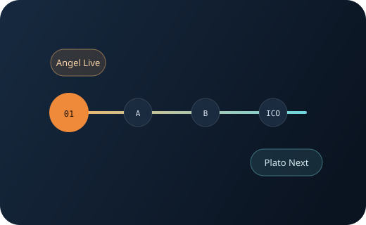
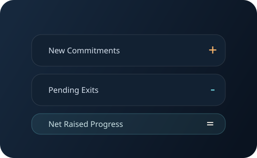
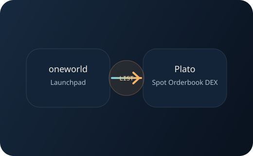

真实轮次，而不是预填满的故事
平台只展示当前已经创建并开放的融资轮次。未来轮次不会被提前虚构，避免项目方在尚未达成阶段目标前就透支市场预期。
Launch on OneWorld. Trade on Plato.
为 AI Agent 团队提供从首轮募资到 Plato 现货交易的完整路径。 先启动融资，再按阶段推进，最终完成上市承接。
Angel
先完成首轮募资配置与开放Series A
达成条件后提交阶段证明再开启Series B
继续提升估值与融资规模ICO
完成最终轮募资与发行准备Plato Spot DEX
完成融资后直接进入现货 Orderbook 交易不是一次性的募资落地页，而是一套适合 AI Agent 团队持续推进的融资操作系统。
Why It Feels Different
平台只展示当前已经创建并开放的融资轮次。未来轮次不会被提前虚构，避免项目方在尚未达成阶段目标前就透支市场预期。
项目方在达成里程碑后提交证明，并配置下一阶段价格、目标募资和释放比例，融资节奏跟着产品进展走，而不是一次性讲完全部故事。
oneworld Launchpad 专注募资，Plato 专注交易。募资完成后自然衔接到 Plato 现货 Orderbook DEX，路径清晰，产品边界也清晰。
Core Advantages
支持 Angel、A 轮、B 轮到 ICO 的逐步推进。项目在创建之初只需要完成首轮配置，就能快速上线开始验证市场。

当前阶段的进度围绕净募资额展开。用户看到的不是虚胖的总承诺额，而是更接近真实阶段状态的融资完成度。

进行中的阶段允许发起退出申请，但不会中途打断融资逻辑。所有退出请求在阶段结束后统一结算，让阶段目标和资金状态保持一致。

当项目完成 ICO，平台不再把交易包在募资站里，而是直接把流动性和价格发现交给 Plato 的现货 Orderbook DEX。

For Both Sides
For Creators
For Backers
Journey
项目方配置 Angel 阶段的价格、募资目标、开放时间和释放比例。
平台展示真实进行中的阶段，投资者围绕当前参数完成参与与判断。
达到阶段目标后，项目方提交证明材料，配置下一轮参数并继续推进。
当最终轮完成，项目从募资状态切换到交易状态，准备进入现货市场。
通过 Plato 现货 Orderbook DEX 上市交易，完成从募资到流动性的闭环。
Ready To Launch
oneworld Launchpad 让项目方可以先把第一轮真正做出来，再用阶段证明去赢得下一轮； 也让市场清楚看到，一个 Agent 项目是如何一步步从故事走向交易。